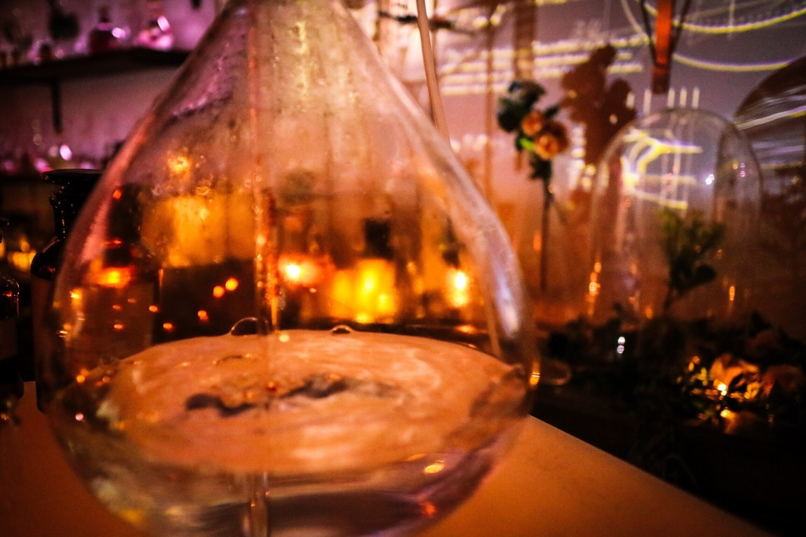

| 2017/03 30 Thu | 花になれ |
ちはるーむへようこそ
今日のちはるーむでは映画を鑑賞しました。
Back to the Futureでした。

ゆるふわカール。
今日は国立競技場落成記念日。
神宮外苑に国立霞ヶ丘陸上競技場が完成した日です。
完成から6年後には東京オリンピックの開閉会式の会場になったそうです。
東京オリンピックには私の大叔父が出場していたので、おばあちゃんも会場に行っていたという話を聞くとなんか不思議な感じがします◎
#chihashot
今日もまた、flowers by NAKEDの写真を、
とってもフォトジェニックな空間だったので！

手前は暖色で後ろは寒色。
このアンバランスな感じが
私はとっても好きです。
お花の雰囲気や色合いも
渋くて良い。

フラスコの中にあるお水と
後ろの灯りの淡さが
とても可愛い。
見ているだけで温かい気持ちになれそう。
------------------------------------------------♡
♬ ChihaMusic
「花になれ」flumpoolさん
この曲を初めて聞いた時を
今でも覚えています。
車の中でお父さんが、
この曲良いだろ！ってかけてくれたの。
それで聞いたらとっても良くて
flumpoolさんを好きになったんだ〜
異なるサビが二つあるのもいい。
"笑って泣いて歌って 花になれ
咲き誇れ いつか 光溢れ"
この部分が好きだな
ずっと聞いていたい。
17th個別握手会、まだまだ募集しています！
皆さん是非来てくださいヽ(；；)丿
おやすみ
斎藤ちはる
コメント(234)
2017/03/30 23:48